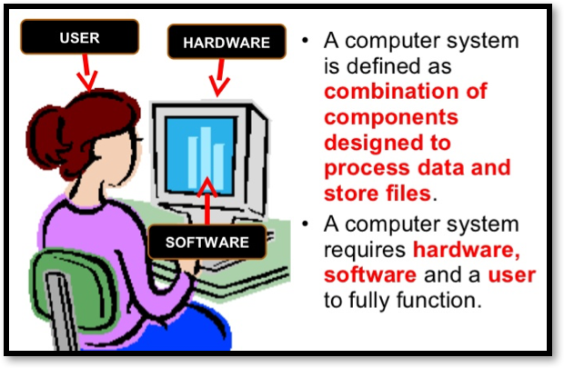
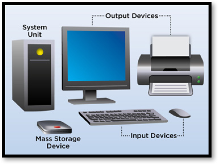

3.4.1 Computer Systems - Hardware & Software
Table of Contents
1 Hardware and Software
Learn It: What is a Computer System?
- A computer system is made up of both
hardwareandsoftwarecomponents and is capable of:- Data Input – Allowing users to input the instructions using
input devices, - Data Processing – Using a microprocessor, typically the
Central Processing Unit (CPU)to process instructions, - Data Storage – Storing user instructions,
- Data Output – Output processed instructions using
output devices. - Data Transmission - Ensuring that data can be transferred to or from another computer system
- Data Input – Allowing users to input the instructions using
- As well as the personal computer, this definition applies to any equipment which uses computer technology.

- Hardware is any
physical componentsthat make up the computer. - Software is any
programthatrunson the computer. - Computer systems are all around us. They are not just
desktop PCs, but also includemobile phones,tablets,supermarket tills,ATM cash machinesandengine management systemsin modern day cars.
2 Hardware
Learn It: What is Hardware?
Hardware is the physical parts of the computer that you can touch.
- The hardware on a computer are the components of a computer you can physically touch. This includes the computer itself, the parts inside the computer and any peripherals (i.e. things that are attached to the computer):
- Monitor,
- Keyboard,
- Mouse,
- Computer Case,
- Printer,
- Graphics card,
- Power supply unit,
- Motherboard,
- CPU,
- RAM,
- Storage (HDD, DVD-ROM).

3 Software
Learn It: What is Software?
Software are the programs that control how the computer works.
- Software is any program that runs on a computer system. It can be
grouped into two main categories:
- System Software: Programs that are needed to enable the computer
to function, including the
operating system,utilities software,library routinesandprogramming language translators.
- System Software: Programs that are needed to enable the computer
to function, including the
- Application Software: Programs that enable a user to perform particular
tasks like;
word processing,spreadsheet calculations,databases management,gaming,web browsing,mobile phone apps,graphics design,programming,music editingand many more programs for specific applications such aspayroll,accounts,air traffic controletc.
4 Relationship between Hardware and Software
Learn It: Software working with the hardware
- Some people find it easy to remember the difference between the hardware and software of a computer system if they think of them in terms of the human body and their thoughts.
- The body, brain and all the mushy bits inside us could be compared to the hardware of our system, these are the bits we could touch. Our thoughts, dreams and feelings could be compared to the software of our human system.
- You cannot have a living and functioning person without both the hardware and the software working together. It is the same in a computer system; it needs both the hardware and the software to be working together for the computer system to function correctly.
Badge It: Hardware and Software Table
Silver: Answer the following questions and complete the table below and place a tick in the column to show if the item is hardware or software.
- Describe what hardware is?
- Define software and give some examples?
| Item | Hardware | Software |
|---|---|---|
| Spreadsheet | ||
| Graphics Tablet | ||
| Touch Screen | ||
| Internet Browser | ||
| Light Sensor | ||
| Headphones | ||
| Network Cable | ||
| Mouse | ||
| Windows/Mac OS/IOS | ||
| CPU | ||
| RAM |
- Upload to Algorithms - Computer Systems: Silver on BourneToLearn
Badge It: Types of Computer Systems Table
Gold: Read the information about computer systems below and then copy and complete the table detailing each type of computer system.
- A computer is an electronics device that processes data.
- There are many types of computers, from small, embedded computers, such as those used in watches and calculators, to huge supercomputers that are used to perform computationally intensive tasks, such as weather forecasting.
| General Purpose Systems | Dedicated Systems | *Control Systems | |
|---|---|---|---|
| Purpose | Programmed to perform a wide range of tasks. | Perform a specific function or set of functions. | |
| Features | |||
| Examples | Fitness monitors, baby incubators, security alarms |
- Upload to Algorithms - Computer Systems: Gold on BourneToLearn